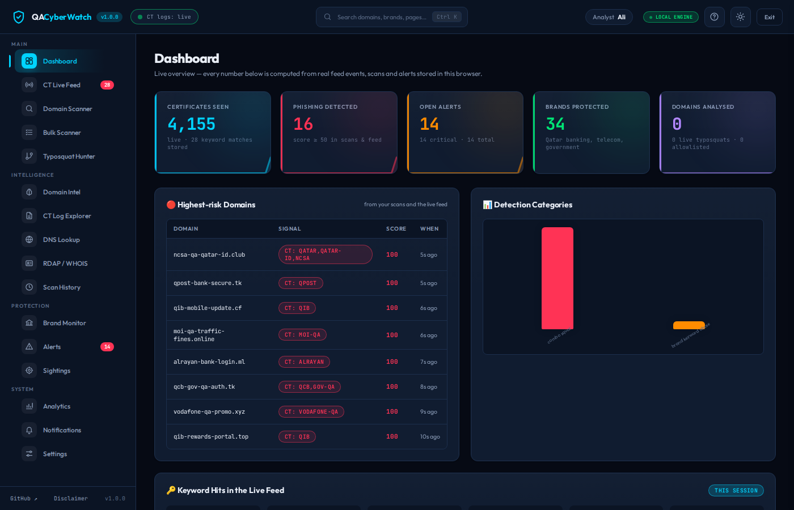
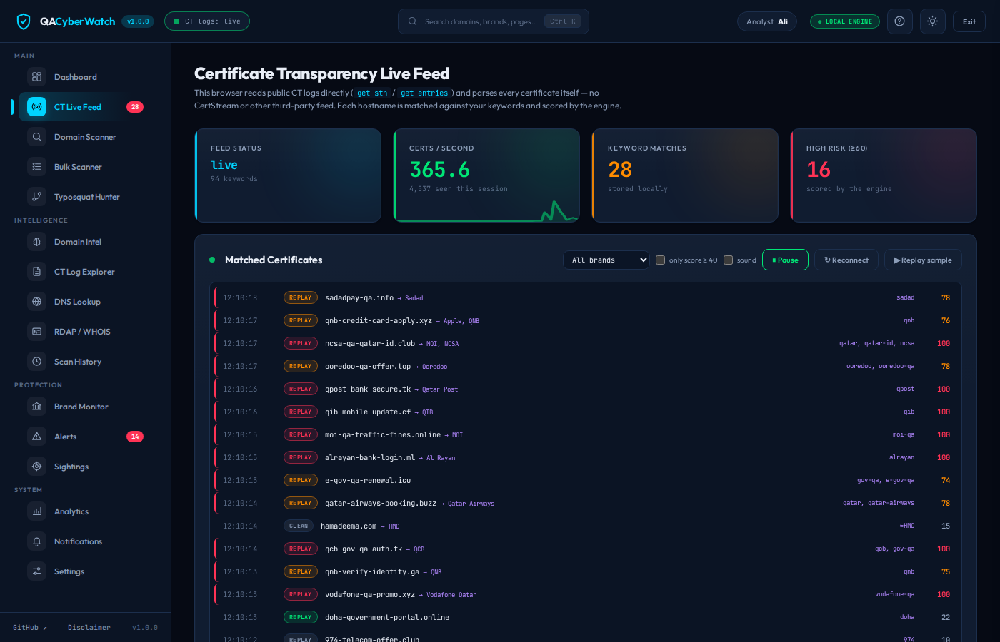
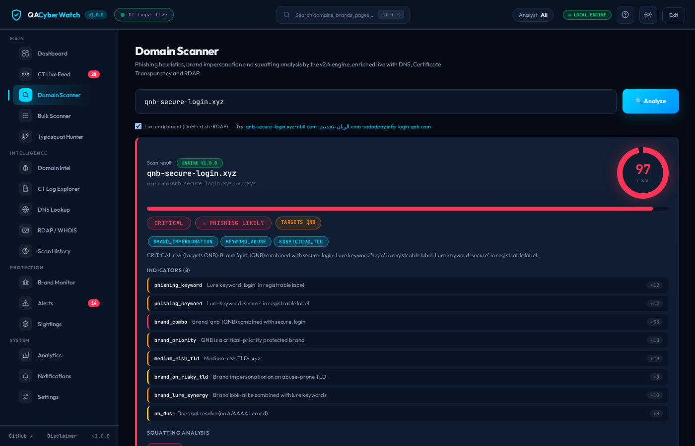
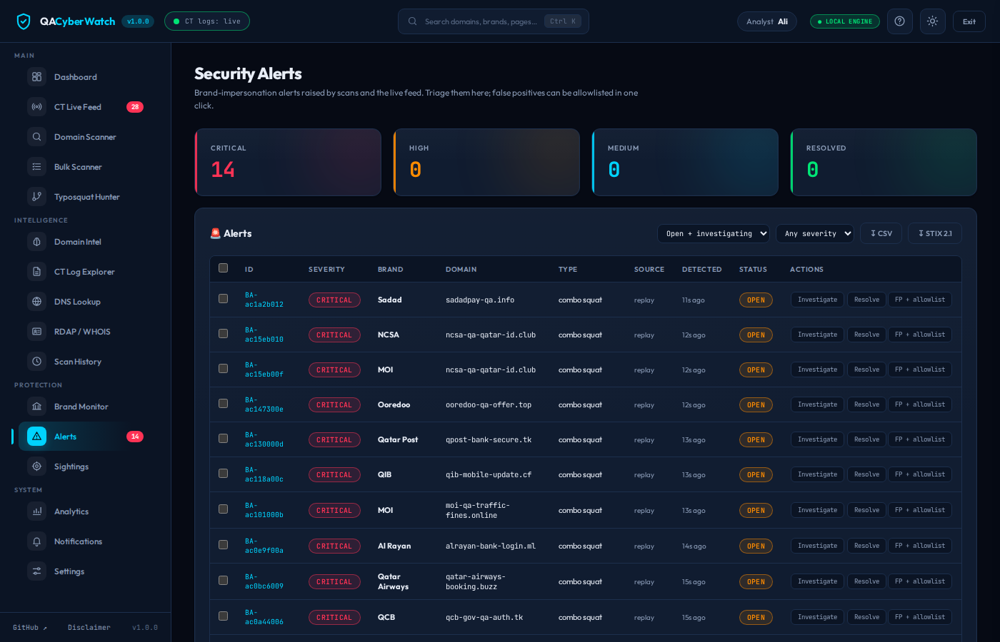
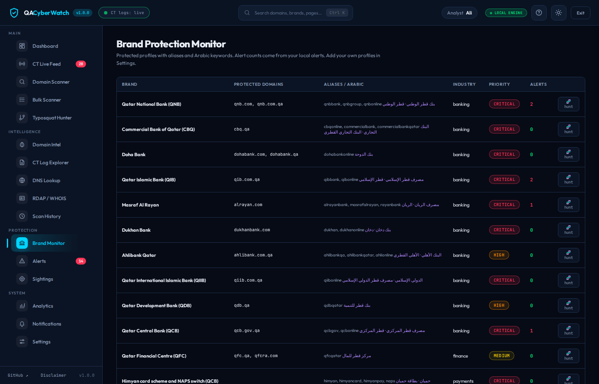

Phishing detection and brand protection for the State of Qatar
رصد التصيد وحماية العلامات التجارية في دولة قطر
QACyberWatch reads Certificate Transparency logs the moment certificates are issued, hunts look-alikes of Qatari banks, payment services, telecoms and government services in Latin and Arabic script, and turns every candidate into a triaged alert. No third-party feed. Nothing leaves your browser.
يقرأ QACyberWatch سجلات شفافية الشهادات لحظة إصدار الشهادة، ويبحث عن النطاقات المشابهة لأسماء البنوك القطرية وخدمات الدفع وشركات الاتصالات والجهات الحكومية بالحروف اللاتينية والعربية، ثم يحوّل كل نطاق مشتبه به إلى تنبيه جاهز للمراجعة من غير الاعتماد على أي مزوّد خارجي ومن غير أن تغادر بياناتك المتصفح.

A contribution to Qatar's cybersecurity maturity
مساهمة في نضج الأمن السيبراني في قطر
The sectors that scam campaigns target in Qatar are the sectors this engine knows by name: banks and the Himyan and NAPS payment infrastructure, Ooredoo and Vodafone Qatar, Hukoomi and Metrash, MOPH and HMC, Kahramaa and QatarEnergy, Qatar Airways and Qatar Post, the charities and the universities. The tool is independent and open, so any institution, NCSA, Q-CERT or a sector CERT can audit it, run it and extend it.
القطاعات التي تستهدفها حملات الاحتيال في قطر هي القطاعات التي يعرفها هذا المحرك بالاسم، فهو يحمي البنوك وبنية الدفع حميان وNAPS وأوريدو وفودافون قطر وحكومي ومطراش ووزارة الصحة ومؤسسة حمد الطبية وكهرماء وقطر للطاقة والخطوط الجوية القطرية وبريد قطر والجمعيات الخيرية والجامعات، وهو مستقل ومفتوح المصدر ليتمكن أي جهة أو الوكالة الوطنية للأمن السيبراني أو فرق الاستجابة القطاعية من مراجعته وتشغيله وتوسيعه.
Early warning
إنذار مبكر
A look-alike becomes visible when its certificate is issued, often days before any lure reaches a victim.
يظهر النطاق المشابه عند إصدار شهادته وغالباً قبل وصول أي رسالة احتيالية إلى الضحية بأيام.
Evidence, not opinions
أدلة لا آراء
STIX 2.1 bundles, CSV, reports and syslog feed existing SOC tooling and incident records.
تُغذّي حزم STIX 2.1 وملفات CSV والتقارير وسجلات syslog أدوات مركز العمليات الأمنية وسجلات الحوادث القائمة.
Arabic by design
العربية في الأساس
Arabic brand names, Arabic lure words and mixed-script tricks are first-class inputs, not an afterthought.
أسماء العلامات بالعربية وكلمات الإغراء العربية وحيل الخلط بين الأحرف مدخلات أساسية في المحرك وليست إضافة لاحقة.
Open to audit
قابل للتدقيق
MIT licensed, 450+ tests, two engine implementations checked for identical verdicts. Read the alignment note.
رخصة MIT وأكثر من 450 اختباراً وتطبيقان للمحرك يُفحصان للتأكد من تطابق أحكامهما، واقرأ ورقة المواءمة.
Built for analysts, not demos
صُمم للمحللين لا للعروض
Every number in the console comes from real Certificate Transparency entries, real DNS answers and real registration data. The full detection engine is ported to JavaScript and parity-tested against the Python backend.
كل رقم في وحدة التحكم مصدره إدخالات حقيقية من سجلات الشهادات وإجابات DNS حقيقية وبيانات تسجيل حقيقية، وقد نُقل المحرك كاملاً إلى JavaScript واختُبر تطابقه مع الخلفية المكتوبة بلغة Python.
Direct CT log tailing
قراءة مباشرة لسجلات الشهادات
Reads RFC 6962 and Static CT API logs itself, parses every DER certificate with a built-in reader, and reads every shard that newly issued certificates can land in.
يقرأ سجلات RFC 6962 وسجلات Static CT API بنفسه ويحلل كل شهادة DER بقارئ مدمج، ويتابع كل الأجزاء التي قد تصل إليها الشهادات الجديدة.
Typosquat Hunter and Watchtower
صائد الأخطاء الإملائية وبرج المراقبة
Generates typos, homoglyphs, leet, combo-squats and TLD swaps for any brand, resolves them over DNS-over-HTTPS and sweeps protected brands on a schedule.
يولّد الأخطاء الإملائية والأحرف المتشابهة والتركيبات وتبديل النطاقات العليا لأي علامة، ثم يحلّها عبر DNS over HTTPS ويمسح العلامات المحمية وفق جدول زمني.
IDN and Arabic aware engine
محرك يفهم النطاقات الدولية والعربية
Detects Cyrillic homoglyphs, mixed scripts and Arabic lures such as الريان-تحديث, with a character inspector and a look-alike diff for every verdict.
يكشف الأحرف السيريلية المتشابهة والخلط بين الأحرف والإغراءات العربية مثل الريان-تحديث، مع فاحص للأحرف ومقارنة بصرية لكل حكم.
Honest scoring
تقييم أمين
A hosting platform counts once, a leading www is neutral, short keywords stay at label edges, and every finding is a candidate for review.
تُحتسب منصة الاستضافة مرة واحدة ولا يؤثر البادئ www في النتيجة وتبقى الكلمات القصيرة عند أطراف التسمية، وكل نتيجة مرشحة للمراجعة لا حكم نهائي.
Alert lifecycle
دورة حياة التنبيه
Open, investigating, resolved or false positive, with notes, assignee, timeline, bulk triage, one-click allowlisting and consolidation per domain.
مفتوح ثم قيد التحقيق ثم مُعالج أو إنذار كاذب، مع ملاحظات ومسؤول وخط زمني وفرز جماعي وإدراج في القائمة الآمنة بنقرة واحدة ودمج التنبيهات لكل نطاق.
Enrichment and exports
الإثراء والتصدير
DNS-over-HTTPS, crt.sh history, RDAP registration age and URLhaus reputation, then STIX 2.1, CSV, HTML reports and a JSON workspace backup.
إثراء عبر DNS over HTTPS وسجل crt.sh وعمر التسجيل من RDAP وسمعة URLhaus، ثم تصدير بصيغ STIX 2.1 وCSV وتقارير HTML ونسخة احتياطية JSON لمساحة العمل.
How it works
كيف تعمل
Three sources feed one engine. Everything is computed locally, so the console behaves the same on this site and on an analyst's laptop.
ثلاثة مصادر تغذي محركاً واحداً، وكل الحسابات تجري محلياً فتتصرف وحدة التحكم على هذا الموقع كما تتصرف على حاسوب المحلل.
Discover
الاكتشاف
Certificates arrive from the logs you tail directly, look-alikes from the hunter and the Watchtower sweep, and anything else from the scanner or the bulk scanner.
تصل الشهادات من السجلات التي تقرؤها مباشرة، وتأتي النطاقات المشابهة من الصائد ومسح برج المراقبة، ويمكن لصق أي نطاق آخر في الفاحص أو الفاحص الجماعي.
Detect
الكشف
The engine parses the registrable domain, folds confusables and leetspeak, normalises Arabic, checks 34 brand profiles and 94 keywords, scores lures, risky TLDs, structure and hosting platforms, then applies your custom rules.
يحلل المحرك النطاق القابل للتسجيل ويطوي الأحرف المتشابهة ويوحّد العربية ويفحص 34 علامة و94 كلمة مفتاحية، ثم يقيّم كلمات الإغراء والنطاقات العليا الخطرة والبنية ومنصات الاستضافة ويطبّق قواعدك الخاصة.
Triage
الفرز
Alerts are enriched with DNS and registration age, consolidated per domain, and worked in a drawer with evidence, diff, notes and timeline. Export STIX or a report when you hand off.
تُثرى التنبيهات ببيانات DNS وعمر التسجيل وتُدمج لكل نطاق وتُعالج في لوحة جانبية تضم الأدلة والمقارنة والملاحظات والخط الزمني، ثم تُصدَّر بصيغة STIX أو كتقرير عند التسليم.
Inside the console
داخل وحدة التحكم




Self-host the backend
استضافة الخلفية ذاتياً
The browser console needs no server. For monitoring around the clock, notifications to Slack, Teams, Telegram, e-mail or syslog, and a REST API with OpenAPI documentation, run the Python backend.
لا تحتاج وحدة التحكم في المتصفح إلى خادم، أما المراقبة على مدار الساعة والتنبيهات عبر Slack وTeams وTelegram والبريد وsyslog والواجهة البرمجية الموثقة بـ OpenAPI فتتطلب تشغيل الخلفية المكتوبة بلغة Python.
# clone and install
git clone https://github.com/SiteQ8/QACyberWatch.git
cd QACyberWatch && pip install -r requirements.txt
# score a domain
python main.py scan qnb-secure-login.xyz
# tail CT logs directly (no third party)
python main.py monitor
# proactive typosquat watcher, API and dashboard
python main.py watch-squats
python main.py api # http://localhost:5000
# or everything at once
docker compose up -d/api/v1/docsرموز موقّعة وأدوار وتحديد للمعدل وتوثيق OpenAPI على /api/v1/docs